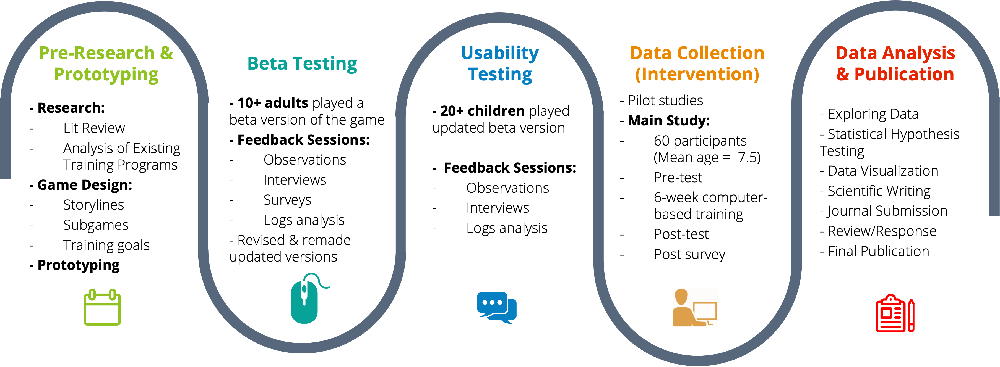
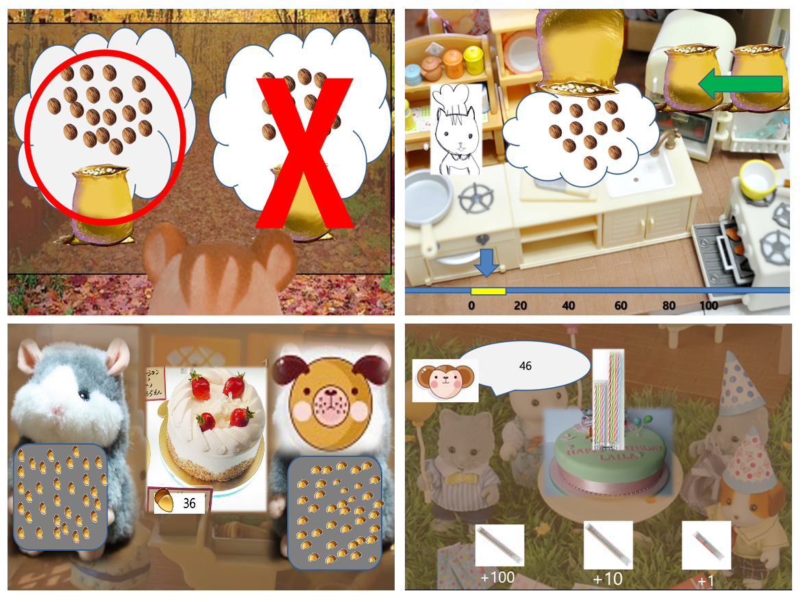
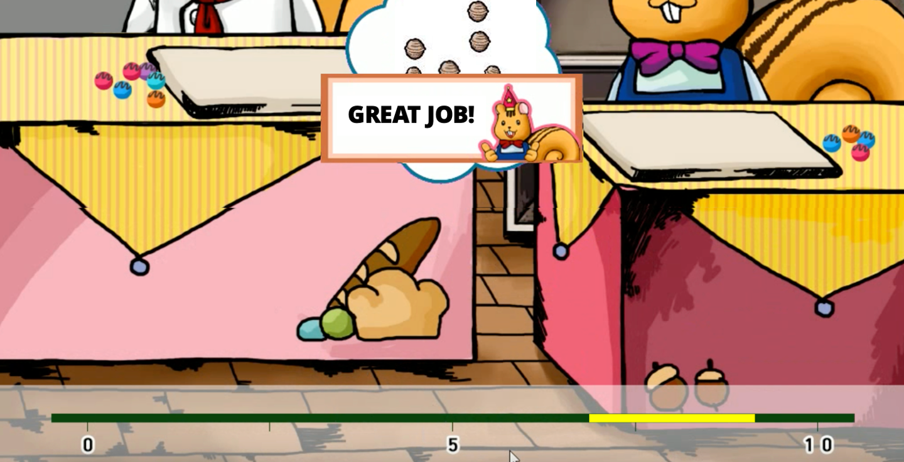
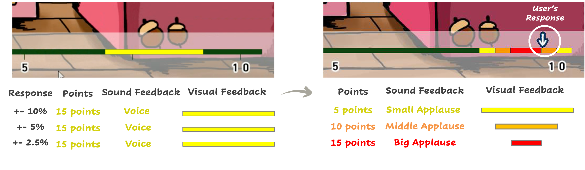
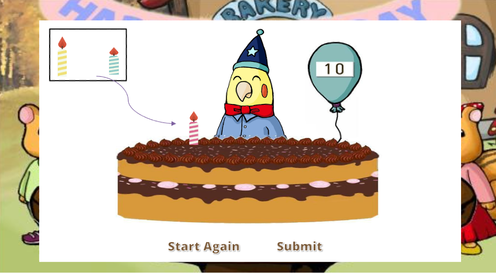
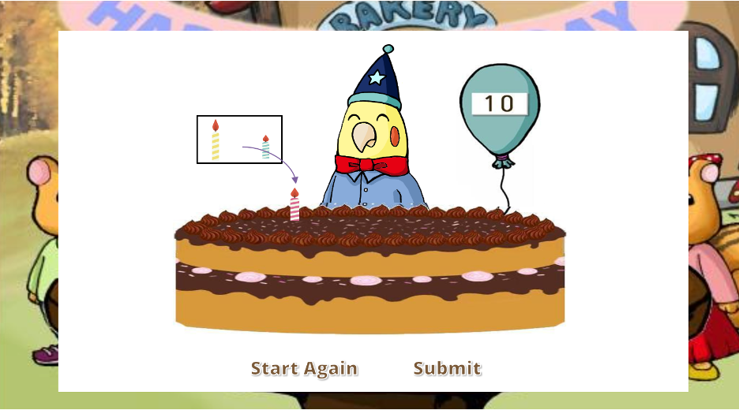
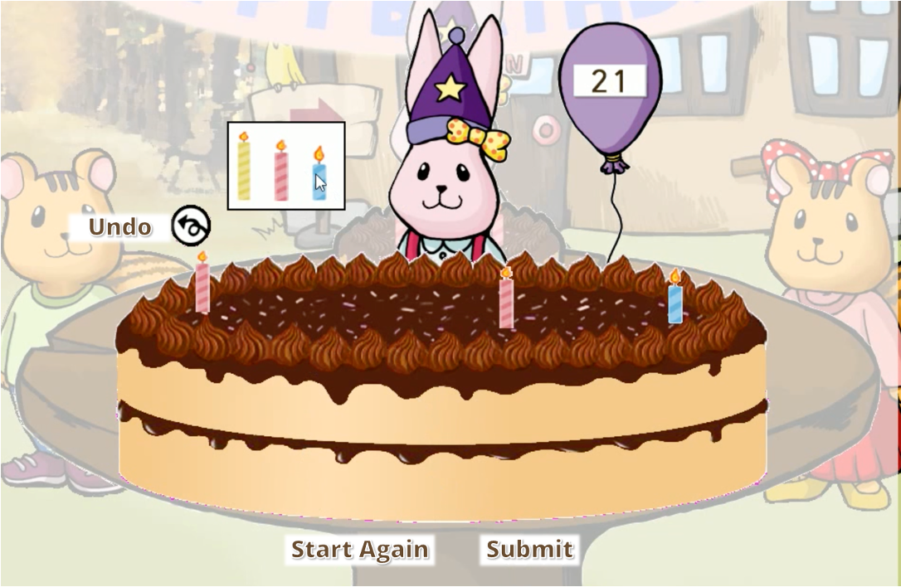

Overview
-
I led a cross-functional team to create an educational PC game ("123 Bakery") for a national-funded math intervention project.
-
"123 Bakery" was designed for training approximate number system (ANS), which refers to estimation & approximation of non-symbolic, numerical quantities (as nuts, acorns, chocolates, candles, etc.) without counting.
-
Our research team wanted to test whether improved ANS abilities were transferred to formal math abilities through the training.
-
This webpage focuses on the UX research part of the 123 Bakery research project: Pre-research, Prototyping, Beta testing, and Usability Testing.
-
I introduce two usability testing case examples.
Roles
Lead Researcher
I was involved in the whole project from start to the end: Prototyping, Beta testing, Usability testing, Pilot studies, data collections, intervention/testing sessions, data analyses, presentations, publishing papers (link)!
Research Scheme
-
Some existing programs only focus on a single part of numerical ability (i.e., symbolic number-line estimation).
Other existing programs included some symbolic (i.e., Arabic) calculation components, which is not matched to our primary research purpose.
-
We were able to get some ideas of game designs from the existing programs. However, graphics and interfaces of those programs are less engaging.
Findings of Pre-Research
Animal characters run a bakery. They make and sell bread, chocolates, and sweets.
- Users help the main characters gather ingredients, sell cakes and sweets, and celebrate birthday parties for other animal characters.
5 mins/game, 30 minutes/day
Initial guides were made based on literature reviews and pre-research.

Game Design
Storylines
Playing (Training) Time
Prototyping (Guides)
Five Subgames of 123 Bakery!

Gathering Nuts
Non-symbolic Numerical Comparison
- The main character, “Daram,” is gathering nuts to make cakes.
- Help Daram choose the larger of two sets of nuts when they appear briefly on the screen.
- Playing this game will help you get better at comparing numerosities.

Estimation
Non-symbolic Number-Line Estimation
- Daram goes back to the 123 BAKERY.
- He wants to estimate how many nuts he has gathered. To help him guess, click on the number line below the nuts.
- By playing this game, you will get better at estimating numbers.

Decorating Cakes 1
Non-symbolic Addition
- Daram is decorating cakes by guessing how many chocolate balls to add.
- By playing this game, you will get better at adding automatically.

Decorating Cakes 2
Non-symbolic Subtraction
- Daram is decorating cakes by guessing how many chocolate balls to subtract.
- By playing this game, you will get better at subtracting automatically.

Selling Cakes
Number-Magnitude Comparison/Mapping
- It’s time to sell cakes! Your animal guests are using acorns to buy cakes!
- Click on the animal with the same number of acorns as the number on the price tag.
- You will get better at switching from a collection of things to Arabic numerals.

Putting Candles on the Cake
Number-Magnitude Referencing/Mapping
- The 123 BAKERY is throwing a birthday party for its animal guests!
- Choose the number of candles that match the age of each animal.
- There are three kinds of candles: the first kind stands for 100 years, the second for 10 years, and the third for 1 year.
- By playing this game, you will get better at recognizing Arabic numbers.
Usability Testing
-
With beta versions, I let adult and children participants play the game and interviewed them.
-
During the playing time, I monitored their playing patterns.
-
I checked usability issues and whether the target abilities are actually trained through the game.
-
After the testing, participants were asked the most or the least enjoyable parts. Also, open-ended ideas and opinions were discussed.
-
My research team changed and improved a few functions through these testings and interviews.
Case 1. Feedback Functions of “Estimation” game
The estimation game asks players to place the number of nuts on the horizontal number line (from 0-10 to 0-1000).
Because the nuts were presented very briefly, users had to estimate the range of the number.
The correct answer was presented as a range (+-10% of the correct answer).
In the beta testing, participants responded that the feedback is too rough and challenging to understand.
This problem was figured out during the beta testing and interview sessions:
Context

Problems
"This game is too difficult."
"I can't understand the intention of the game. Why this yellow line is the correct response?"
"I want to check my response."
Hypotheses:
Analysis
-
If the exact correct answer is given as feedback, players will more easily compare the numerical difference between their response and actual answer.
Players will be more motivated if more specific and dynamic feedback is given.
The player’s response changed to be presented in the exact place of the number by an arrow icon.
The range of correct answers changed to be more specified with the specific color marks of feedbacks. The exact correct answer is indicated as the center of the red range by this setting change. The sound feedback is different from the range of the correct answer.
+-10% range: Yellow & Small applause
+-5% range: Orange & Normal applause
+-1.5% range: Red & Big applause
Solutions

Results
This setting clarifies the intention of the training and also increases the motivation/engagement.
In the interviews, I received positive feedbacks:
“The game was fun. I want a big clap.”
“Estimation game is my favorite. It becomes very fun when I was playing hard levels.”
In the after survey, children responded that the estimation game was the most enjoyable, and the playing scores also showed that most children are very engaged in this game.
Case 2. Usability of the “Putting Candles on the Cake” Game
The ‘Putting candles on the cake’ game asks players to put candles on the cake matched to the age of the animal character. The game initially asked players to ‘drag and drop’ each candle on the cake.
Through several trials of usability testing, I edited the interface and functions of the game.
Children spent too much time dragging each candle on the cake.
Playing data showed that children did an average of 4.2 trials during the total playing time of the game, which is 5-10 times smaller than the other games.
That is not desirable because the amount of training should be similar between sub-games.
Context

Problems
Hypotheses:
Analysis
-
Because the candle box is far from the top of the cake, the dragging time is too long, and the error rate is increased by dragging mistakes.
Because there is no time limit of a trial, children would spend too much time for one trial when they were stuck, losing interests, etc.
The location of the candle box becomes closer to the cake.
The time limit for a trial was added as 10 secs.
Solutions
Results & Remained Issues

The average number of completed trials was increased to 7.2 trials.
However, this number is still significantly smaller than other games.
Another issue was detected during the monitoring session: some children spent too much time putting on candles in a ‘prettier’ way (e.g., making the alignment of candles symmetrical).
Hypotheses:
Analysis
Compared to ‘drag & drop’, ‘click & add’ would decrease the time for completing a trial.
If there is an ‘Undo’ button that cancels the last candle a player puts on, players will be able to correct their mistakes immediately. Thus, the error rate will be expected to be decreased.
The ‘Drag & Drop’ way changed to the ‘click & add’ way. Once the player clicks the candle, the same candle is placed randomly on the cake.
‘Undo’ button was added.
Solutions

Results
The average completed trials were significantly increased to 21.3 trials. This makes players go to the next level faster.
The error rate is decreased.